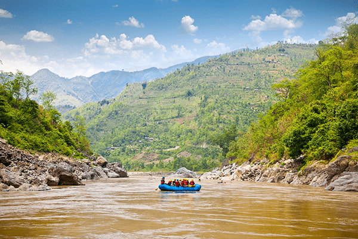

Splashdown Rafting was founded over fifteen years ago by a crew of passionate
engineering and river systems integration experts who wanted to map out and
share the raw beauty of untamed river canyons with the world. Starting with only
one second-hand rubber raft, structural planning blueprints, and a single rugged
transport truck, our team focused heavily on building robust safety
infrastructures and an accessible operational design for clean water running.

Over the past decade, we scaled our regional footprints by integrating
state-of-the-art communication frameworks, specialized self-bailing rafts, and
swift-water rescue educational seminars for every lead guide. Today, we leverage
modern project management methods to manage premier wilderness expeditions,
having safely introduced thousands of families, student groups, and tech teams
to the wonders of backcountry river running.